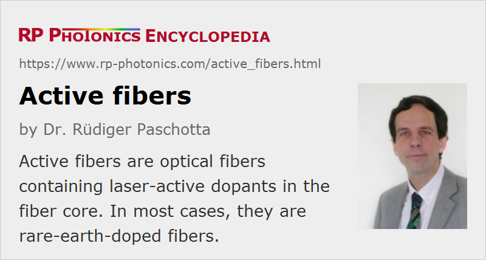

Active Fibers
Definition: optical fibers containing laser-active dopants in the fiber core
More general term: optical fibers
More specific terms: rare-earth-doped fibers, double-clad fibers
Opposite terms: passive fibers
German: aktive Fasern
Categories: fiber optics and waveguides, lasers
How to cite the article; suggest additional literature
Author: Dr. Rüdiger Paschotta
Active fibers are optical fibers which have one or more laser-active dopants in the fiber core. In most cases, they are rare-earth-doped fibers, with dopants like ytterbium, erbium or thulium. Due to those dopants, they can be used as laser gain media, also for realizing fiber amplifiers. Only quite rarely, active fibers are made with transition metal ions.
Active fibers are generally made from some glass, in most cases from fused silica (→ silica fibers). However, there are also active single-crystal fibers.
Besides the ability to amplify light (usually with high gain efficiency and often with a high power conversion efficiency and high beam quality of the output), active fibers usually exhibit higher propagation losses, which however are normally of little relevance, since one generally requires only a relatively short fiber. In most cases, they are single-mode or few-mode fibers, and sometimes large mode area fibers or polarization-maintaining fibers.
For more details, see the article on rare-earth-doped gain media, which also describes special variants such as double-clad fibers.
Laser amplification is not the only possible physical mechanism to obtain gain in a fiber: stimulated Raman scattering (SRS) and the Kerr nonlinearity of the fiber can also be exploited for that purpose. In such cases, one may consider a fiber as active in the sense that it can amplify light.
Questions and Comments from Users
Here you can submit questions and comments. As far as they get accepted by the author, they will appear above this paragraph together with the author’s answer. The author will decide on acceptance based on certain criteria. Essentially, the issue must be of sufficiently broad interest.
Please do not enter personal data here; we would otherwise delete it soon. (See also our privacy declaration.) If you wish to receive personal feedback or consultancy from the author, please contact him e.g. via e-mail.
By submitting the information, you give your consent to the potential publication of your inputs on our website according to our rules. (If you later retract your consent, we will delete those inputs.) As your inputs are first reviewed by the author, they may be published with some delay.
Bibliography
| [1] | R. Paschotta, tutorial on "Modeling of Fiber Amplifiers and Lasers" |
See also: rare-earth-doped fibers, fiber core, gain media, passive fibers, specialty fibers
and other articles in the categories fiber optics and waveguides, lasers
|  |
If you like this page, please share the link with your friends and colleagues, e.g. via social media:
These sharing buttons are implemented in a privacy-friendly way!